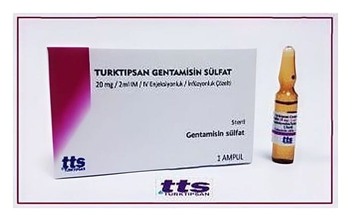

Turktipsan Gentamisin Sülfat 20 mg/2 ml IM/IV Enjeksiyonluk/İnfüzyonluk Çözelti, 1 Adet

Ne için kullanılır
KT · Bölüm 1• TURKTIPSAN GENTAMİSİN SÜLFAT, etkin maddesi gentamisin olan; renksiz veya açık sarı renkli, berrak, partikül içermeyen enjeksiyonluk çözelti içeren ampul şeklinde sunulmaktadır. • TURKTIPSAN GENTAMİSİN SÜLFAT, aminoglikozid grubu antibiyotiktir. Bu ilacı kullanmaya başlamadan önce bu KULLANMA TALİMATINI dikkatlice okuyunuz, çünkü sizin için önemli bilgiler içermektedir. • Bu kullanma talimatını saklayınız. Daha sonra tekrar okumaya ihtiyaç duyabilirsiniz. • Eğer ilave sorularınız olursa, lütfen doktorunuza veya eczacınıza danışınız. • Bu ilaç kişisel olarak sizin için reçete edilmiştir, başkalarına vermeyiniz. • Bu ilacın kullanımı sırasında, doktora veya hastaneye gittiğinizde doktorunuza bu ilacı kullandığınızı söyleyiniz. • Bu talimatta yazılanlara aynen uyunuz. İlaç hakkında size önerilen dozun dışında yüksek veya düşük doz kullanmayınız.
• Her kutuda 2 ml’lik 1 veya 50 adet amber renkli ampul içeren ambalajlarda bulunmaktadır. TURKTIPSAN GENTAMİSİN SÜLFAT göğüs, yara ve kan enfeksiyonları gibi çok çeşitli enfeksiyonların tedavisinde kullanılır.